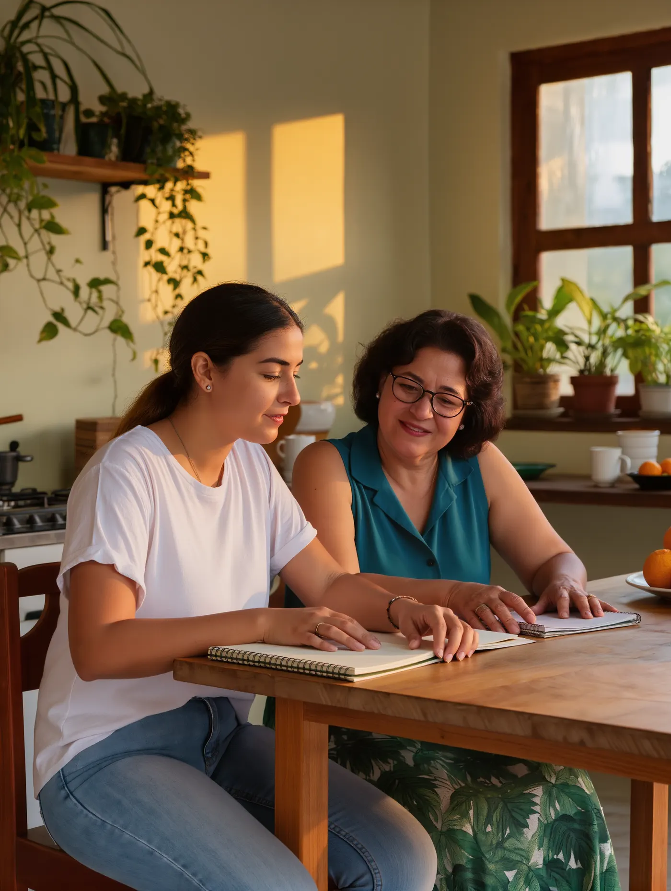
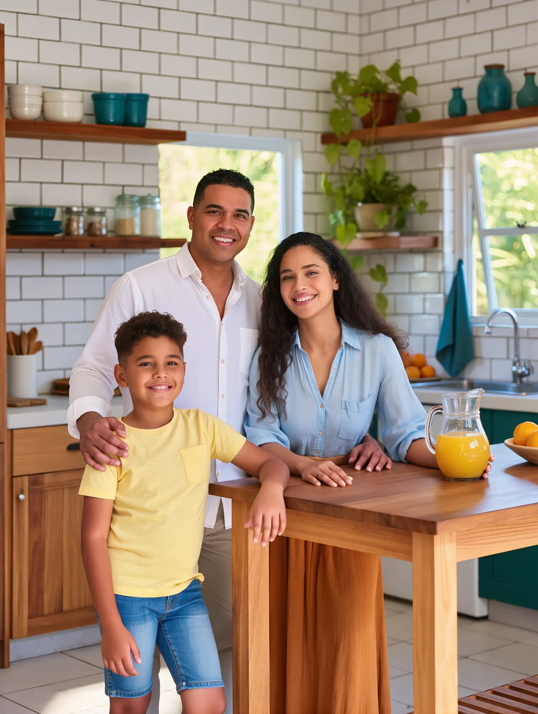
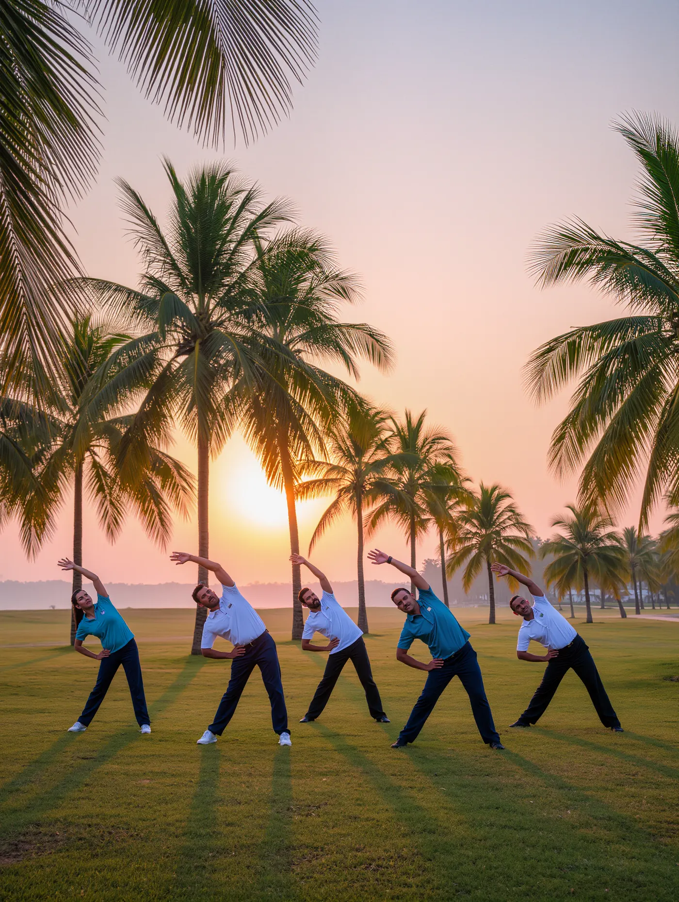
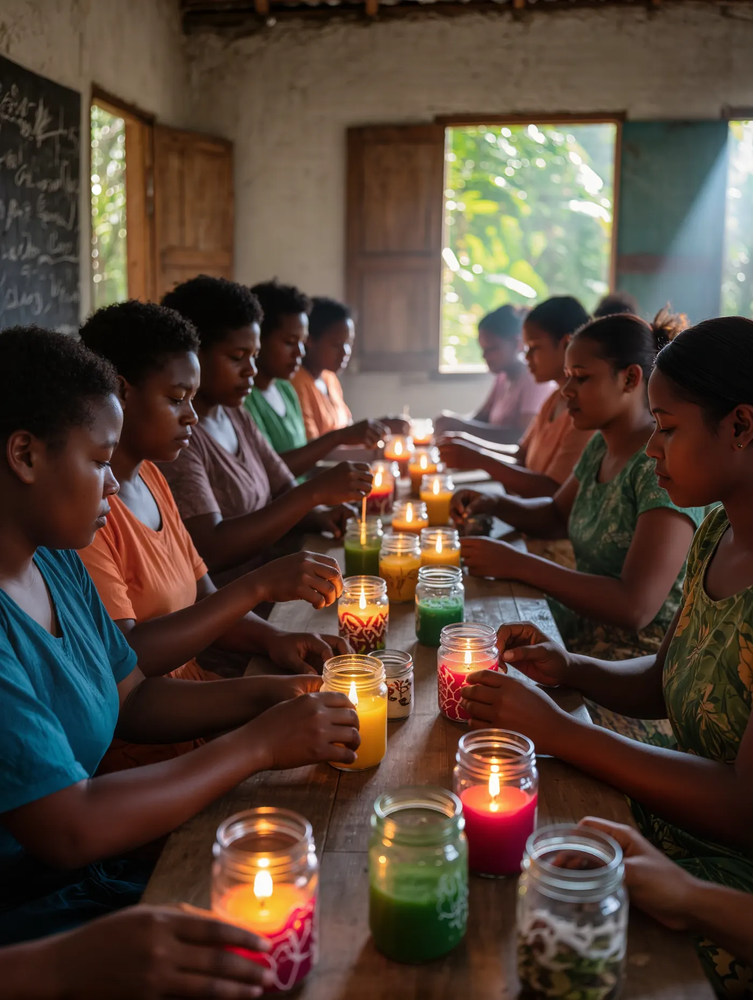
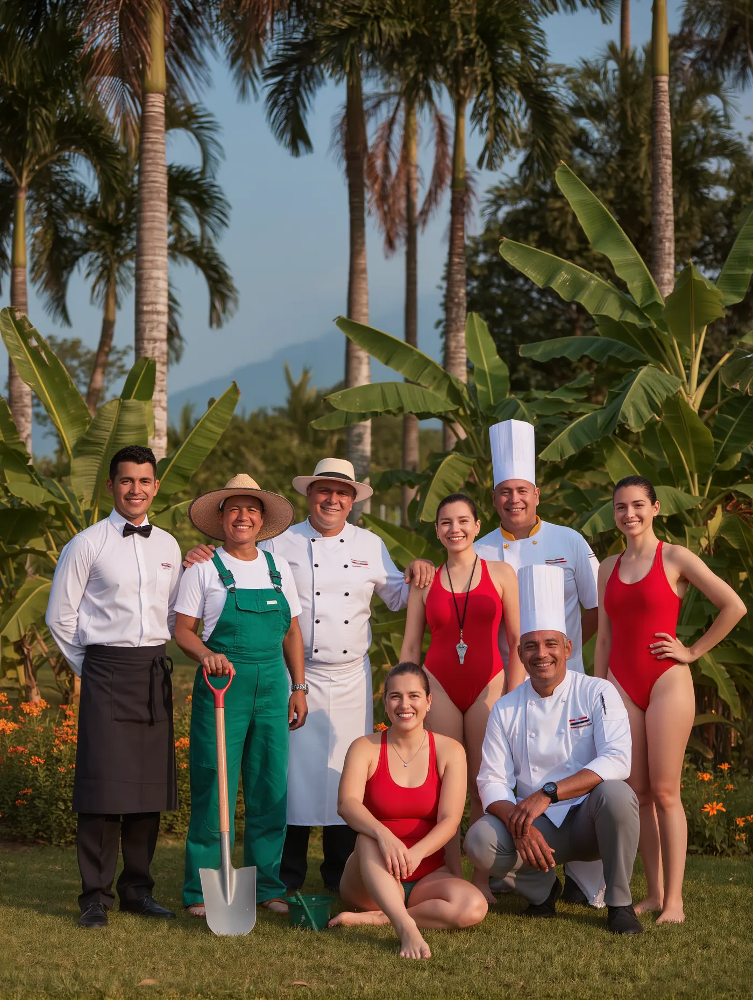
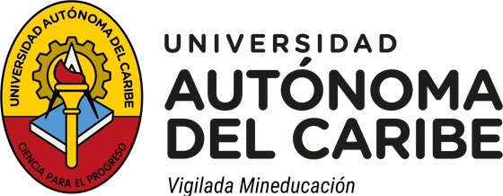
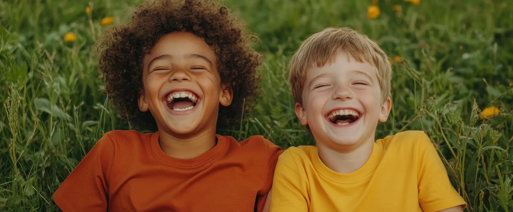

01
Educación
Facilitamos oportunidades para el acceso y permanencia educativa, formación superior y desarrollo de competencias.
Colaboradores
Escanea el código QR para chatear con nosotros desde tu celular.
Nuestra labor se desarrolla en dos grandes frentes: fortalecemos las capacidades y condiciones de vida de nuestros colaboradores y sus familias, y contribuimos a la transformación social de las comunidades de nuestro entorno.
Colaboradores y sus familias
Educación, vivienda y bienestar para generar oportunidades de desarrollo y mejorar la calidad de vida.
Comunidades
Trabajamos especialmente en Salgar mediante iniciativas de gestión social y ambiental.
Facilitamos oportunidades para el acceso y permanencia educativa, formación superior y desarrollo de competencias.
Colaboradores
Apoyamos el acceso, mejoramiento y adecuación de viviendas para contribuir a hogares dignos y seguros.
Colaboradores
Promovemos la salud física, mental y emocional, el desarrollo personal, la actividad física y el emprendimiento.
Colaboradores
Fortalecemos capacidades, participación y tejido social en las comunidades de nuestro entorno.
Comunidad
Promovemos educación ambiental y prácticas responsables para el cuidado y conservación del entorno.
Comunidad
Desde 1989 trabajamos para contribuir al bienestar y desarrollo de las personas. Lo que comenzó como FundaCountry, una iniciativa orientada al bienestar de los colaboradores del Country Club de Barranquilla y sus familias, evolucionó para ampliar su impacto hacia las comunidades de nuestro entorno. Hoy, como Fundación Social Country Club de Barranquilla, continuamos fortaleciendo capacidades, generando oportunidades y acompañando procesos que contribuyen a transformar realidades.
Detrás de cada programa hay personas, aprendizajes y nuevas oportunidades. Conoce las historias de quienes han sido parte de nuestra labor.


Hay muchas formas de contribuir a la transformación social. Encuentra la que mejor se adapte a ti o a tu organización.
Apoya directamente las iniciativas de la Fundación.
Comparte tu tiempo, conocimientos y capacidades.
Construyamos iniciativas que generen impacto.
Contribuye a una iniciativa específica.




Conoce nuestra labor, apoya nuestros programas o construye con nosotros nuevas oportunidades de transformación.
Desde 1989 trabajamos por el bienestar y el desarrollo integral de nuestros colaboradores, sus familias y las comunidades de nuestro entorno.

El 18 de julio nace FundaCountry, una iniciativa del Country Club de Barranquilla para fortalecer el bienestar y desarrollo integral de sus colaboradores y sus familias, en educación, vivienda y bienestar.

Ampliamos nuestro campo de acción hacia las comunidades del entorno y consolidamos dos enfoques: el fortalecimiento interno de los colaboradores y la transformación social del entorno.
PendienteEl 1 de octubre ampliamos el objeto social, lo que dio paso a la Fundación Social Country Club de Barranquilla.
Lo que sigue lo escribimos juntos.
SúmateContribuir al bienestar y la transformación social de nuestros colaboradores, sus familias y las comunidades de nuestro entorno, articulando el compromiso, el talento y los recursos de la Fundación para generar oportunidades que contribuyan al desarrollo integral y al mejoramiento de la calidad de vida.
Trabajamos por el mejoramiento de las condiciones de vida y el desarrollo integral de nuestros colaboradores y sus familias, así como de las comunidades de nuestro entorno, mediante proyectos y programas planificados a partir de las necesidades de nuestros grupos de interés. Promovemos la educación, la salud, el bienestar y la asistencia social.
Ser una Fundación reconocida por la calidad y sostenibilidad de su acción social, consolidando programas que generen resultados significativos para los colaboradores y sus familias y contribuyan al desarrollo integral y sostenible de las comunidades de nuestro entorno.
Asumimos con responsabilidad nuestro propósito y cada iniciativa que desarrollamos.
Comprendemos las diferentes realidades y promovemos acciones pertinentes y humanas.
Reconocemos las necesidades de las personas y trabajamos para generar oportunidades.
Buscamos que nuestras acciones generen un impacto positivo y sostenible.
Programas para colaboradores y sus familias, y para las comunidades de nuestro entorno, organizados en cinco líneas de trabajo. 13 programas.

Programas explica qué hacemos; aquí mostramos para qué sirve lo que hacemos.
Fortalecimiento interno
Transformación del entorno · especialmente Salgar
Emprendiendo Juntos – Comunidad, con mujeres del corregimiento de Salgar.
Detrás de cada cifra hay personas. Conoce las historias de quienes han sido parte de nuestra labor.
Detrás de cada programa hay personas, aprendizajes y nuevas oportunidades. Conoce las historias de quienes han sido parte de nuestra labor.
Aquí irá el testimonio, contado en sus propias palabras.
Nombre y fotografía Pendiente
Cuál era su situación antes de llegar a la Fundación.
Cómo intervino la Fundación y con qué programa.
Qué cambió después en su vida o en la de su familia.
Nombre y fotografía Pendiente
Cuál era su situación antes de llegar a la Fundación.
Cómo intervino la Fundación y con qué programa.
Qué cambió después en su vida o en la de su familia.
Aquí irá el testimonio, contado en sus propias palabras.
Nombre y fotografía Pendiente
Cuál era su situación antes de llegar a la Fundación.
Cómo intervino la Fundación y con qué programa.
Qué cambió después en su vida o en la de su familia.
Aquí irá el testimonio, contado en sus propias palabras.
Nombre y fotografía Pendiente
Cuál era su situación antes de llegar a la Fundación.
Cómo intervino la Fundación y con qué programa.
Qué cambió después en su vida o en la de su familia.
Aquí irá el testimonio, contado en sus propias palabras.
Personas, empresas, socios del Club, voluntarios e instituciones pueden hacer parte. Elige una forma de apoyo para conocer cómo funciona.

Apoya directamente las iniciativas de la Fundación.
Medios de pago y pasos para hacer tu aporte.
PendienteAportes económicos y montos sugeridos.
PendienteA qué programas y necesidades se dirige cada aporte.
PendienteA quién escribir para resolver dudas sobre tu donación.
PendienteComparte tu tiempo, conocimientos y capacidades.
Pasos para inscribirte como voluntario.
PendienteConocimientos y habilidades que buscamos.
PendienteEn qué programas y espacios puedes aportar.
PendienteOrientada principalmente a empresas e instituciones. Construyamos juntos iniciativas que generen impacto.
Dirige tu apoyo hacia una iniciativa específica.

Conoce qué tipo de aportes recibimos y cómo hacerlos llegar.
Materiales, útiles, equipos u otros bienes que necesitan los programas.
PendienteCanal y horarios para coordinar la entrega.
PendienteTe contactaremos para contarte los siguientes pasos.
Escríbenos si quieres donar, ser voluntario, crear una alianza, apoyar un programa o pedir información.
Estamos en el Country Club de Barranquilla, Atlántico.